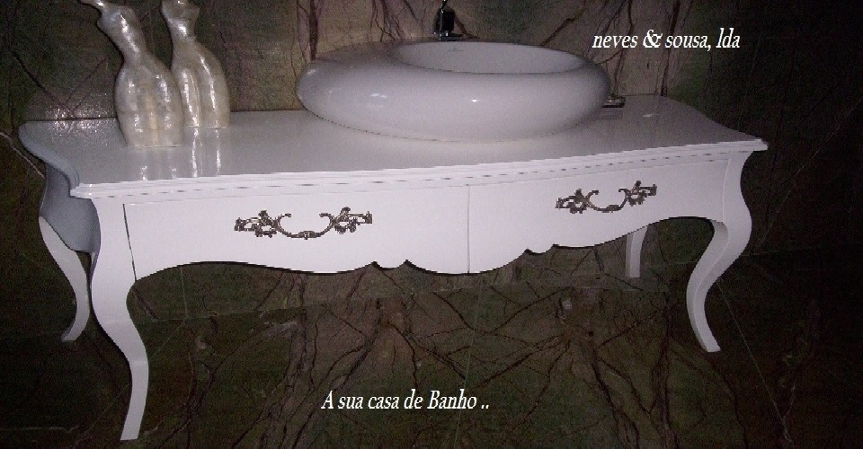

Resguardo de radiadores
Madeira e desenho recortado numa peça para o interior.
Mobiliário & carpintaria · Sobrado, Valongo
Do mobiliário por medida à reparação de móveis, o trabalho começa no espaço que quer transformar.
Conhecer o nosso trabalho
O que fazemos
A Neves & Sousa dedica-se ao fabrico de mobiliário e a trabalhos de carpintaria para o lar, em Sobrado, Valongo.
Cozinhas, quartos, roupeiros, salas e casas de banho. A apresentação da fábrica reúne também portas interiores, revestimentos e reparação de móveis antigos ou danificados.
Explorar os serviçosUma seleção de peças
Madeira e desenho recortado numa peça para o interior.
Uma peça decorativa para completar o espaço.
Uma conversa com contexto
Escolha o tipo de móvel ou o trabalho de carpintaria.
Medidas aproximadas, fotografias e referências ajudam a explicar a sua ideia.
Envie o pedido e confirme os detalhes diretamente com a Neves & Sousa.
Uma ideia para a sua casa
Uma peça nova, uma cozinha à medida ou um móvel para recuperar. O primeiro passo é explicar o que tem em mente.
Falar do meu projeto